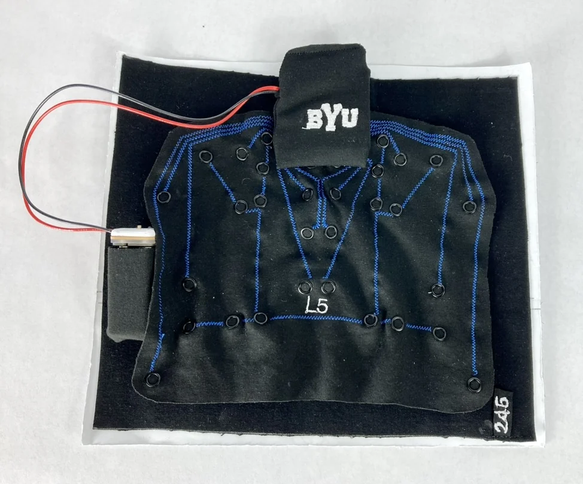
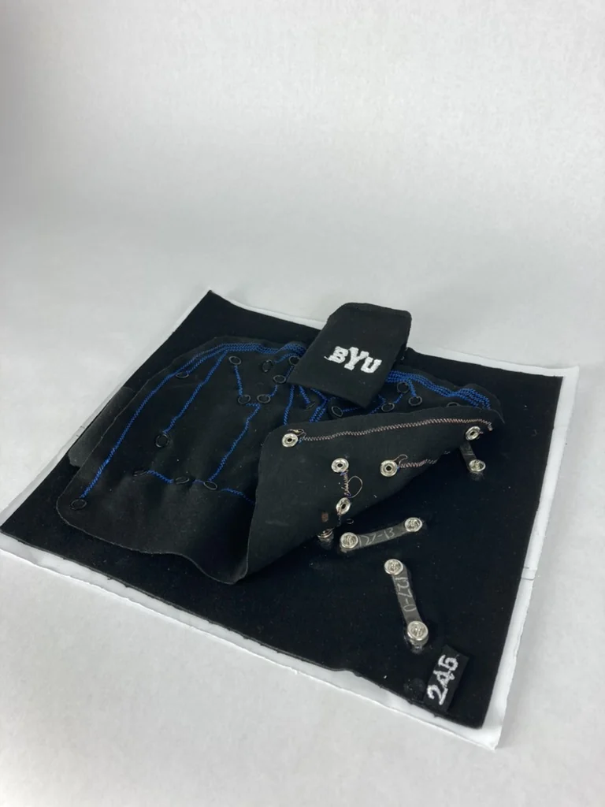
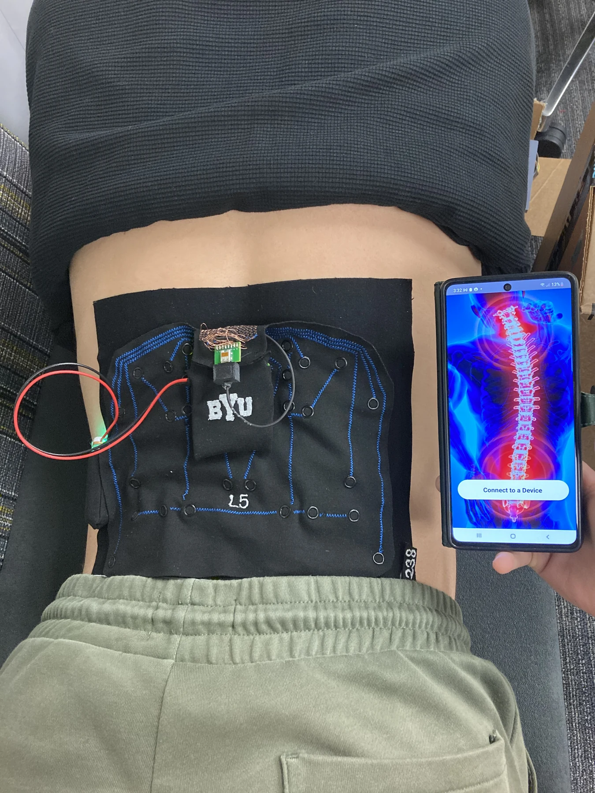

BYU Biomechanics Laboratory
Wearable spine sensors
In Dr. Anton Bowden’s Biomechanics Laboratory at BYU, I helped manufacture wearable arrays of nanocomposite sensors that track spinal kinematics. The research explored their use in understanding and diagnosing chronic low back pain.

My contribution
- Manufactured wearable nanocomposite sensor arrays.
- Supported aspects of device design and established laboratory documentation.
- Participated in human studies as part of the research team.




Research communication
I wrote an abstract as first author and presented a technical poster at the SOARS Spine Summit in 2022.
Skills: Sensor fabrication, Biomechanics, Research communication